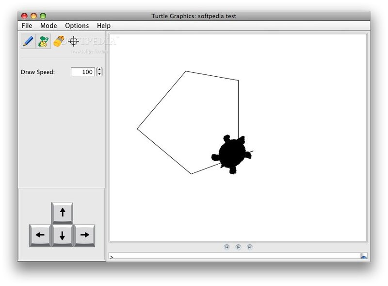

IgamesL
Доброго дня, наш сайт IgamesL
зможе допомогти тобі розібратися що таке комп'ютерна гра, та як навчитися їх створювати самим

Bідеогра — це гра, в ігровому процесі якої гравець використовує інтерфейс користувача щоб отримати зворотну інформацію з відео пристрою. Електронні пристрої, які використовуються
для того щоб грати, називаються платформами. Наприклад, до таких платформ відносяться персональний комп'ютер та гральна консоль.
Пристрій введення який використовується для керування грою, називається ігровий контролер. Це може бути, наприклад, джойстик, клавіші або і перше і друге на геймпаді.
Що вам це дасть?
- Створення ігор
- Розвивання алгометричного мислення
- Розвивання дизайнерського мислення
- Вивчення мов програмування(C++,C#,Python,і т.д.)
- Кар'єрний ріст
Які є жанри відеоігор?
- Екшн
- Стратегія
- Рольова гра
- Симулятор
- Пригоди

Види програмування
- Python
- Java
- C
- C++
- JavaScript
Фізика
Фізика - це те, як світ гри реагує на дії гравця або об'єктів всередині світу. Ось які можуть бути фізичні дії:
- Ходьба
- Їзда
- Стрибки
- Удари або постріли
- Падіння предметів і так далі
Механіка
Ігрова механіка - це те, якими способами гравець взаємодіє зі світом. Сукупність ігрових механік становить ігровий процес. Наприклад, ви вже реалізували можливість ходьби і стрибків. Ця гра, скоріше, платформер.
А якщо додасте механіку отримання досвіду, підвищення рівнів, прокачування навичок, - гра стане схожим на RPG. Механіка - така ж важлива складова гри, як і сюжет або графіка.
Ще один приклад: ви написали сценарій до гри, в якій потрібно втекти з в'язниці. Навіть якщо гра буде самою лінійною в світі, ігрова механіка може все змінити:
- Якщо додати стрілянину, то буде стрілялка
- якщо гравець буде беззбройний, - стелс
- Якщо ще й замки потрібно зламувати, то це вже головоломка або пазл.
Будучи програмістом, доведеться приділяти багато часу механіці.
На які платформи орієнтуватися
Розібравшись з тим, як все буде влаштовано в грі, можна приступати до розробки. Але щоб проект був комерційно успішний, вибирайте популярні платформи. Всього можна виділити чотири:
- Персональні комп'ютери.
- Приставки.
- Мобільні пристрої.
- Браузер.
Отже, коли Ви ознайоились з основами я пропоную пройти таку вікторину і почати
МОВА ПРОГРАМУВАННЯ LOGO
Лого — одна з перших мов програмування, створена для навчання дітей. Її розробили в 1967 році педагог Сеймур Пейперт і вчений Ідіт Харель. У LOGO вперше використали метод “черепашачої графіки”, який пізніше часто використовувався і в освітніх цілях, і у професійній графіці. Користувач за допомогою команд керує однією або декількома черепашками, які залишають за собою сліди. Мета — поставити команди так, щоб черепашки створили малюнок.

МОВА ПРОГРАМУВАННЯ Scratch
Scratch — популярна програма для навчання дітей програмуванню, перекладена 50 мовами, зокрема українською. Scratch створена на основі ідей мови програмування Logo та конструктора Lego. З її допомогою можна створювати мультфільми та двовимірні флеш-ігри. У меню доступні готові герої, їх можна редагувати. За допомогою скриптів, представлених у вигляді пазлу, можна програмувати рухи та мову, змінювати зовнішність, реакцію на дії користувача та інші параметри. Поточна версія розміщена онлайн, у ній використовується Adobe Flash Player.
гра Cargo-Bot
Cargo-Bot — перша гра, створена на iPad. У ній потрібно програмувати кран, щоб він розставляв контейнери в потрібному порядку. Замість коду у грі використовуються кубики з діями, які потрібно вишикувати у спеціальному полі в певному порядку. Потім кран виконує задані дії. Мета — виконати завдання, використовуючи якомога меншу кількість кубиків. Гра англійською мовою, розрахована на дітей до 11 років.
Cod Builder для Minecraft
Cod Builder дозволяє писати модифікації для популярної гри Minecraft: змінювати навколишнє середовище, частину доби, задавати дії для персонажів. У меню доступні три редактори: вбудований MakeCode, веб-додаток Scratch і Tynker з бібліотекою готових скриптів. Cod Builder є частиною освітньої програми Minecraft Education, тому спочатку потрібно зареєструватись у програмі, потім завантажити Minecraft Education Edition і Cod Builder. Це безкоштовна демо-версія англійською мовою.
гра CodMonkey
CodMonkey — ігрове середовище, в якому користувач програмує дії мавпочки. Мета кожного рівня — взяти банан, для цього потрібно рахувати кроки, розвертатися та долати перешкоди. Гравцеві пропонують команди, з яких він пише код. Потім цей код запускається, й можна відразу побачити результат. Перші 30 рівнів є безкоштовними, потім потрібно придбати підписку – від $3,25 на місяць, є тарифні плани для вчителів
Code.org
Це некомерційна організація та однойменний веб-сайт, очолюваний Хаді та Алі Партові, метою якого є заохочення людей, особливо школярів у Сполучених Штатах, до вивчення інформатики.
Якщо обрати "show code"можно подивитися код на мові Java
Unity
Unity - міжплатформне середовище розробки комп'ютерних ігор, розроблене американською компанією Unity Technologies. Unity дозволяє створювати програми, що працюють на більш ніж 25 різних платформах, що включають персональні комп'ютери, ігрові консолі, мобільні пристрої, інтернет-програми та інші.
Вивчити його можна на офіційному сайті Unity
Можете переглянути перший відео урок по Unity
Unreal Engine
Unreal Engine - ігровий двигун, що розробляється і підтримується компанією Epic Games. Першою грою на цьому двигуні був шутер від першої особи Unreal, випущений у 1998 році.
Unreal Engine - він складніший від Unity але він потужніше, на офіційному сайті також можно навчитися робити ігри
Можете переглянути перший відео урок по Unreal Engine
Unity
Unity - міжплатформне середовище розробки комп'ютерних ігор, розроблене американською компанією Unity Technologies. Unity дозволяє створювати програми, що працюють на більш ніж 25 різних платформах, що включають персональні комп'ютери, ігрові консолі, мобільні пристрої, інтернет-програми та інші.
Вивчити його можна на офіційному сайті Unity
Можете переглянути перший відео урок по Unity
Unreal Engine
Unreal Engine - ігровий двигун, що розробляється і підтримується компанією Epic Games. Першою грою на цьому двигуні був шутер від першої особи Unreal, випущений у 1998 році.
Unreal Engine - він складніший від Unity але він потужніше, на офіційному сайті також можно навчитися робити ігри
Можете переглянути перший відео урок по Unreal Engine
CryEngine
CryEngine - ігровий двигун, створений німецькою приватною компанією Crytek в 2002 році. CryEngine використовується у всіх іграх, розроблених самої Crytek, починаючи з Far Cry і до теперішнього часу; розробники послідовно допрацьовували двигун, випускаючи нові версії.
CryEngine- це найпотужніший движок для створення ігор , але і найскладніший для вивчення, на офіційному сайті є також туторіал по створенню ігор
Можете переглянути перший відео урок по CryEngine